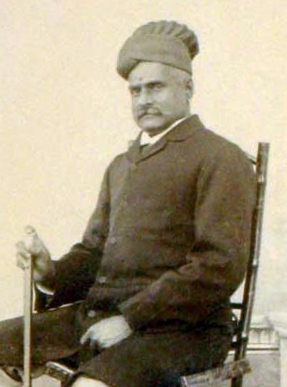

Indian Art
Indian subcontinent has always been the reservoir of talent, be it in the field of art, science, literature, or
any other field. However, special emphasis should be given to the famous Indian art and its various forms. The
art work of this country, be it paintings or sculptures or even traditional arts like Rangoli, has always
gathered appreciation from people residing in almost all the parts of the world. In this section, we will
acquaint you with popular Indian art works.
Indian Painters
Indian subcontinent is famous for being the home country of a large number of exceptionally brilliant artists,
including painters, writers, singers, etc. The art of painting in India dates back to the ancient times, as is
evident from the cave paintings of Ajanta and Ellora. Many painters of India have received global recognition
also and their paintings have fetched millions of dollars in international auctions. From the paintings
revolving around religious topics to the abstract ones, Indian painters have covered almost each and every arena
Abanindranath Tagore
Abanindranath Tagore, the nephew of Rabindranath Tagore, was one of the most prominent artists of India. He was
the first major supporter of swadeshi values in Indian art. Abanindranath first created the ‘Indian Society of
Oriental Art’ and later went on to establish Bengal school of art. His sole aim for establishing the school was
to counter the English influence on Indian artists. He did that by incorporating Indian elements in his works
and achieved success whenBritish art institutions gave in and accepted to teach and propagate his style of works
in their organizations. His idea of modernizing Mughal and Rajput paintings eventually gave rise to modern
Indian painting, which took birth at his Bengal school of art. Abanindranath is also regarded as a proficient
and accomplished writer. Most of his literary works were meant for children.Some of his books like ‘BudoAngla’,
‘KhirerPutul’ and ‘Rajkahini’ are best examples of Bengali children's literature.
Amrita Sher-Gil
.jpg)
Often referred to as India's Frida Kahlo for aesthetically blending traditional and Western art forms, Amrita
Sher-Gil was one of the most famous painters of India. She is also considered as a revolutionary woman artist
and the originator of modern art in India. Though her artworks mainly depicted Western style and culture during
the initial stages of her career, the painter gradually began to rediscover herself by depicting Indian subjects
using traditional methods. Apart from painting, she was also well-versed in playing piano and fond of reading.
She even travelled to different parts of India, France and Turkey and managed to incorporate ideas gained from
different techniques into her own works. Throughout her career, she painted her friends, lovers and also made
quite a few self-portraits, for which she is often considered as a narcissistic by many.
Francis Newton Souza
Francis Newton Souza, who often ridiculed hypocrites and the brutal acquisitive nature of the upper class
through his magnificent paintings, is one of the most prominent yet often forgotten Indian painters. Marred by
his own futuristic thinking and several troubled relationships, the founding member of Progressive Artists'
Group of Bombay still managed to rise above his personal life to conquer the hearts of many through his works.
He was one among a few post-independence Indian painters who had managed to gain respect and recognition in the
West. The West had to be his professional haven, for his works were often bold, depicting nude women and
societal criticisms, which would have perhaps annihilated his painting career, had he created them in the East.
He often experimented with his mediums and mixed chemicals with his paints to come up with a unique end result.
He was also probably the first Indian painter to have used acrylic paint in as early as the 1960s. Though his
paintings did not receive the kind of monetary attention that they deserved during his lifetime, they however,
were sold for colossal prices at various auctions post his death. Today, his paintings adorn the walls of many
museums all over the world.
Jamini Roy
Walk into an average middle-class art-loving household of West Bengal, and chances are that you might come
across a well-preserved portrait of Jamini Roy rather than a fancy looking artwork of one of India’s many modern
artists. The paintings had to be well-preserved, for Jamini Roy would not have sold his work, had he doubted his
buyer’s passion for art. While most of the Indian painters of the 20th Century were excited about modern art,
which fetched them good returns, Jamini Roy stood out for his love towards Indian roots. His passion for simple
Indian folk art was such that he did not care about selling his works for fancy prices and only sold them for as
little as 350 rupees. And he would buy back his works, should he find out that his paintings are maintained
poorly by the buyer. Influenced by the simplicity of Kalighat paintings (Indian folk art), Jamini Roy gave up on
modern art and stuck to his roots, winning millions of hearts in the process. He also gave up on using European
paints and even canvases to replace them with suitable alternatives. In 1954, the Government of India honored
him with Padma Bhushan for his contribution towards art.
M.F. Hussain

Maqbool Fida Husain was one of the most famous artists of India, known all over the world for his amazing
paintings that he created during his lifetime. So huge is the popularity of his paintings that M. F. Husain was
called the 'Picasso of India' by the Forbes magazine. Husain was largely responsible in modernizing Indian art
as he was one of the most influential founding members of Bombay Progressive Artists' Group. During the course
of his splendid career, Husain also tried his hand at printmaking, photography and filmmaking. Some of the films
which he directed met with critical success. Apart from receiving the prestigious National Film Award under Best
Experimental Film for his movie ‘Through the Eyes of a Painter’, he also made ‘Gaja Gamini’ and ‘Meenaxi: A Tale
of Three Cities’. The latter was screened and appreciated at the 2004 Cannes Film Festival. Though he was a
celebrated and respected painter, Husain met with heavy criticisms during the final phases of his career. The
criticisms flew in for his nude depictions of Hindu goddesses, which ultimately forced him to seek asylum in
countries like Qatar and England. Husain never made it back to his motherland and the debates surrounding his
exile continued for many days even after his demise.
Rabindranath Tagore

Rabindranath Tagore, who composed the National Anthem of India and won the Nobel Prize for Literature, was a
multitalented personality in every sense. He was a Bengali poet, Brahmo Samaj philosopher, visual artist,
playwright, novelist, painter and a composer. He was also a cultural reformer who modified Bengali art by
rebuffing the strictures that confined it within the sphere of classical Indian forms. Though he was a polymath,
his literary works alone are enough to place him in the elite list of all-time greats. Even today, Rabindranath
Tagore is often remembered for his poetic songs, which are both spiritual and mercurial. He was one of those
great minds, ahead of his time, and that is exactly why his meeting with Albert Einstein is considered as a
clash between science and spirituality. Tagore was keen in spreading his ideologies to the rest of the world and
hence embarked on a world tour, lecturing in countries like Japan and the United States. Soon, his works were
admired by people of various countries and he eventually became the first non-European to win a Nobel Prize.
Apart from Jana Gana Mana (the National Anthem of India), his composition ‘Amar Shonar Bangla’ was adopted as
the National Anthem of Bangladesh and the National Anthem of Sri Lanka was inspired by one of his works.
Raja Ravi Varma

Raja Ravi Varma was an Indian painter and artist, considered as one of the greatest painters in the history of
Indian art. Raja Ravi Varma is known for his amazing paintings, which revolve mainly around the Puranas (ancient
mythological stories) and thegreat Indian epics - Mahabharata and Ramayana. Ravi Varma is one of the few
painters who managed to accomplish a beautiful union of Indian traditionwith the techniques of European academic
art. This is one of the reasons why he is considered as one of the most, if not the most prominent Indian
painters. Varma was also responsible in taking the Indian art all over the world with his impeccable technique.
While the Europeans and other art lovers admired his technique, the laymen of India enjoyed his work for its
simplicity. More often than not, Varma’s paintings highlighted the beauty of South Indian women which were
admired by all. His portrayal of Hindu gods and goddesses went on to become worship material for many people
belonging to the lower castes. Back then, these people were often forbidden from entering temples and thus they
celebrated Varma's works, for they gave them an idea of how the deities looked inside the temple. He also
managed to improve the artistic knowledge and spread the importance of art among Indian people. He achieved this
by making affordable lithographs, which were accessible even to the poor. Alternatively, this also made him a
household name and Raja Ravi Varma soon captured the hearts of all. Recognizing his feat, Viceroy Lord Curzon
honored him with the Kaisar-i-Hind Gold Medal for his service in thefurtherance of public interest.
S. H. Raza
.jpg)
One of the most distinguished artists of the Indian subcontinent, Sayed Haider Raza, simply known as S.H. Raza,
is famous for his usage of rich colors in all his portrays. Though he settled down in France in the early 1950s,
he continued to represent Indian art by incorporating Indian philosophy and Indian cosmology in his works.
Throughout his career, he had mainly used oil and acrylics for his paintings, which highlighted Indian
ethnography. He also incorporated the Indian concepts of space and time, which was a huge hit among French,
Indian and other art lovers worldwide. In 2010, a seminal work of his titled ‘Saurashtra’ was sold at a
Christie's auction for an impressive $3,486,965 (Rs. 16.42 crore), making him one of the priciest modern artists
of India. For his immense contribution in the field of art, S.H. Raza was honored with India’s second highest
civilian award, Padma Vibhushan in the year 2013.
Indian Paintings
The tradition of painting has been carried on in the Indian subcontinent since the ancient times. Standing as a
testimony to this fact are the exquisite murals of Ajanta and Ellora, Buddhist palm leaf manuscripts, Mughal and
Kangra schools of miniature Indian paintings, etc. Infact, records have been found that indicate the usage of
paintings for decorating the doorways, guest rooms, etc. Some traditional Indian paintings, like those of
Ajanta, Bagh and Sittanvasal, depict a love for nature and its forces.
With time, Indian classical paintings evolved to become a sort of blend of the various traditions influencing
them. Even the folk painting of India has become quite popular amongst art lovers, both at the national as well
as the international level. Most of the folk paintings reflect a heavy influence of the local customs and
traditions.
Cave Painting
Cave paintings of India date back to the prehistoric times. The finest examples of these paintings comprise of
the murals of Ajanta, Ellora, Bagh, Sittanavasal, etc, which reflect an emphasis on naturalism. Ancient cave
paintings of India serve as a window to our ancestors, who used to inhabit these caves.
Madhubani Painting
.jpg)
Madhubani painting originated in a small village, known as Maithili, of the Bihar state of India. Initially, the
womenfolk of the village drew the paintings on the walls of their home, as an illustration of their thoughts,
hopes and dreams. With time, the paintings started becoming a part of festivities and special events, like
marriage.
Miniature Painting
Miniatures paintings are beautiful handmade paintings, which are quite colorful but small in size. The highlight
of these paintings is the intricate and delicate brushwork, which lends them a unique identity.
Mughal Painting

Mughal painting reflects an exclusive combination of Indian, Persian and Islamic styles. As the name suggests,
these paintings evolved as well as developed during the rule of Mughal Emperors in India, between 16th century
and 19th century.
Mysore Painting
.jpg)
Mysore Painting is a form of classical South Indian painting, which evolved in the Mysore city of Karnataka.
During that time, Mysore was under the reign of the Wodeyars and it was under their patronage that this school
of painting reached its zenith.
Pahari Painting
.jpg)
Pahari painting is the name given to Rajput paintings, made in the in the Himachal Pradesh and Jammu & Kashmir
states of India. These painting developed as well as flourished during the period of 17th to 19th century.
Indian Pahadi paintings have been done mostly in miniature forms.
Rajput Painting
.jpg)
Rajput painting originated in the royal states of Rajasthan, somewhere around the late 16th and early 17th
century. The Mughals ruled almost all the princely states of Rajasthan at that time and because of this; most of
the schools of Rajput Painting in India reflect strong Mughal influence.
Tanjore Painting
.jpg)
Tanjore Painting is one of the most popular forms of classical South Indian painting. It is the native art form
of Thanjavur (also known as Tanjore) city of Tamil Nadu. The dense composition, surface richness and vibrant
colors of Indian Thanjavur Paintings distinguish them from the other types of paintings.
Rangoli
Rangoli, one of the most beautiful and most pleasing art forms of India, is comprised of two words, 'rang'
meaning 'color' and 'aavalli' meaning colored creepers' or 'row of colors'. Rangoli basically comprises of the
art of making designs or patterns on the walls or the floor of the house, using finely ground white powder along
with different colors. Numerous households in the Indian subcontinent make use of Rangoli designs for decorating
the courtyard of their house.